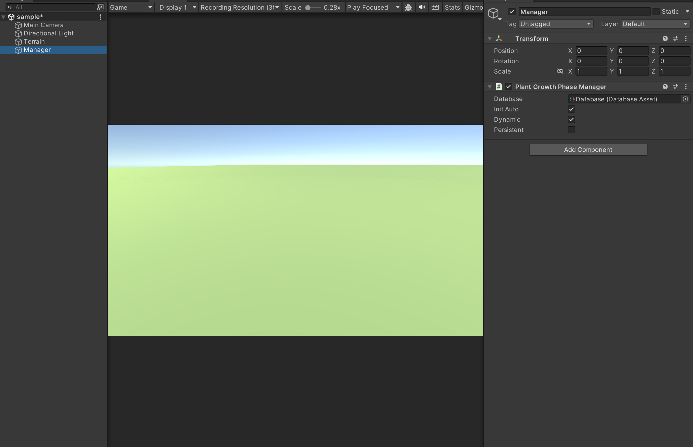
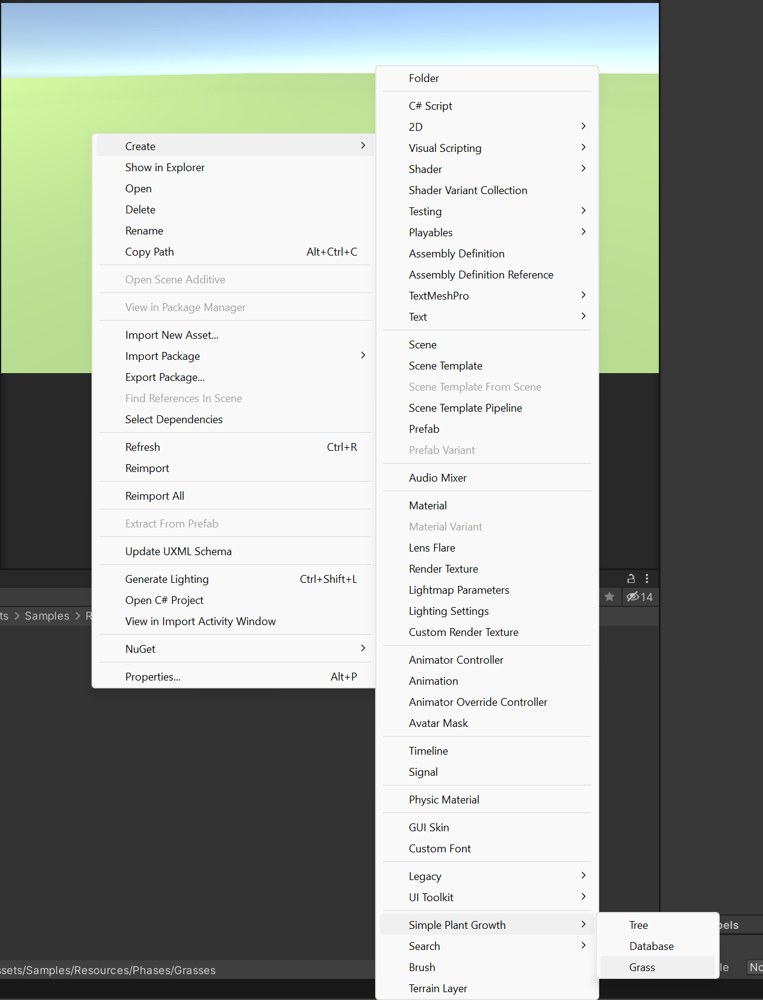
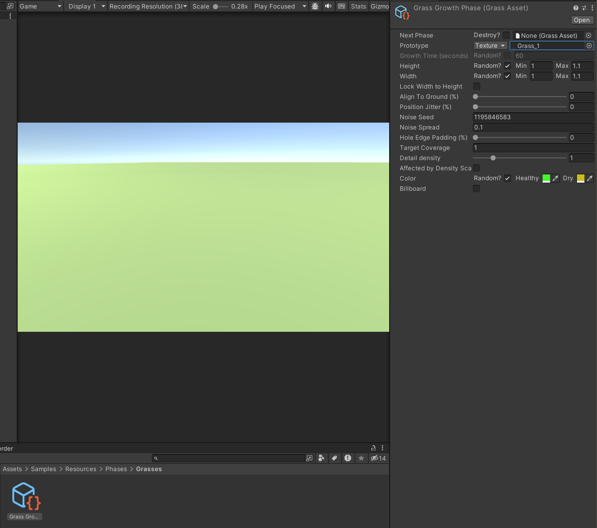
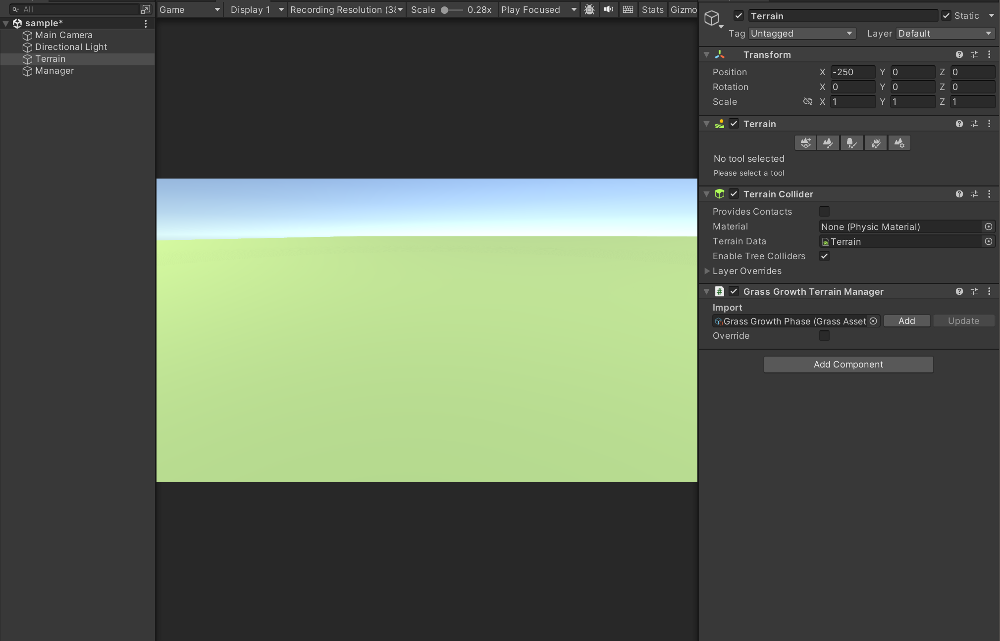
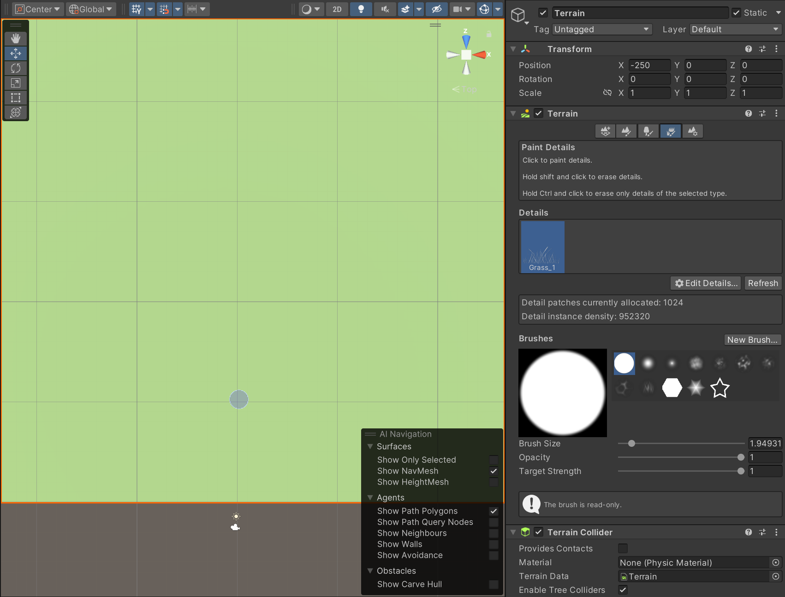

How to add grass
Steps
Add "Plant Growth Phase Manager" component to a GameObject

Create a "Grass Growth Phase" asset

Configure the asset

Add "Grass Growth Terrain Manager" component in the same place as the "Terrain" component
Insert the desired phase in the field of the component and click on the "Add" button

Select "Paint Details" on the "Terrain" component and use the new prototype added to the terrain through the "Scene" window

Result